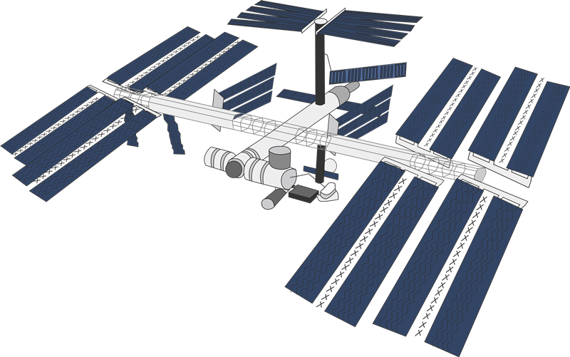

Follow Me On My Adventure
We are going to the Troposphere layer
I am fascinated by science, especially our solar system as well as a software developer. When I was young, I dreamed of working a the computer environment. Therefore, I am taking the Computer Engineering Technology program at Sheridan College to pursue my childhood dream. I have a passion for programming, and technology devices. During the time I studied at Sheridan College and had a part-time job at fast food restaurant, I acquired a lot of essential skills such as time management, problem-solving, customer service, and deeply know how to work in a fast-paced and multi-cultural environment. Moreover, I am now self-studying to enhance my Java programming skills, design pattern skills, and JavaScript, as well as Python in the nearest future. Finally, I am highly active, enthusiastic, and extremely friendly.
Hey, We're not stopped yet! We are going to the space!
Let's continue go to the Stratophere layer!
Java JavaScript C HTML CSS SQL
__________________________________________________________________________________________
Microsoft Office Communication Problem-solving Self-starter Customer Serive
Do you still wanna join with me?
If the answer is "yes"! We will travel to the Mesophere layer!
Computer Engineering Technoloy - Advanced Diploma
GPA: 3.67/4.0
Keep's going! We will go to the space soon!
We gonna reach the Thermosphere layer!
Java OOP Language
•Successfully completed a Java project about writing Java application to display student’s information,calculate,
display save their GPA to files on disk by using a dynamic array of objects, inheritance, and polymorphism.
•Designed and built graphical interfaces and small applications using JavaFX and Scene Builder.
•Used UML class diagrams to present the rough class design the envision for the application.
__________________________________________________________________________________________
Technical Report and Presentation
•Worked in group research to solve the technical problems in the case study and wrote detail technical reports.
•Completed group presentations about researching the Microsoft Surface Go tablet.
Do you see International Space Station overthere?
Exosphere layer! Here we go!!
I can see International Space Station overthere!
Thank you for joinning my adventure :)